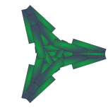

How to play
Idea

You are the captain of a ship of your choosing and belonging to a particular race. Each ship has its own speed, strength and other particularities. And every race has its own haversters, fighters, combat turrets, accessibility to special turrets, as well as different relation with other races.
Goal
As of now, there are no real goal to the game other than accumulating kills and being able to select better and biggers ships when respawning.
Moving
As the captain you can (if the ship can) maneauver at sublight speed by clicking of an empty spot on the screen, giving the order to your subordinates to manoever the ship in the position.
Attacking
To give the order to attack another player or computer, click on their ship. You cannot attack civilian ships or harvesters directly.
Managing resources

There are 2 kind of resource in this game: energy (up right corner) and ore/materials (bottom right corner). Your ship can contain a limited quantity of both the resources and turrets will use each of the in a different way. It is important to pay attention to the tubes indicating where each resource is used.
Energy
You can gain energy by being close to a sun, the closer you are the faster you'll accumulate solar energy, using solar panels will boost this effect. Nuclear reactor/generator can be used to generate energy from you materials, be care ful since it can empty you mineral stock pretty quickly.
Ore/materials
You can build up you your ore reserve by launching your harvesters (see "Managing ship and fleet" below) close to an asteroid. Once the raw ore carried to your ship it will be added in the transformation chain which will convert it slowly to useable materials.
Building
Turrets
Each black circle (possibly with the installed turret in it) on the right of the screen represents a possible turret on your ship. To build, upgrade or destroy a turret, click on the black circle. A list of the turrets available to your race will appear, those you can't afford will be grayed and only applicable upgrades will be showed.
Small ships

Your ship has the possibility to host a fleet of harvester, fighters, etc. in its hangar. These ships are displayed at the bottom of the screen, on the right of the space indicator. To build a particular ship, simply click on it's icon and wait for it to be complete. The ships will be built continuously so click again on the icon to stop the production. Always keep an eye on the space left in the hangar, it is shared between the ships and missiles.
Missiles
Your stock of missile is displayed at the bottom of the screen, on the left of the space indicator. You can build them the same way you build the small ships.
Indicators
There is many indicators around the screen gining you all the information you need about your ship
Radar and localisation
In the upper left corner, there is the radar, centered on your ship. It is clickable to move the camera and indicates by a color code the type of object seen on it. The fire number next to it is the radar range, in meter. The other numbers under it are the position of your ship compared to Earth's sun.
Energy and shield
In the upper right corner, the green number represents the amount of energy in your batteries. The green bar also represents the proportion of energy in you batteries.
The blue bar represents the shield strength.
Ore and hull
In the bottom right corner, the blue number reprensents the amount of useable ore in your reserver. The blue quarter of a circle next to it also represents the proportion of ore in your reserve.
The green, yellow or red bar next to it represents the strength of your ship's hull. Of course, red is a bad sign.
Alarms
There are 2 levels of visual alarms possible on the controls: yellow for warnings and red for critical or dangerous situations.
The radar will "flash" red if an ennemy is in range, and yellow if a dangerous object (like a mine or a nuke) is detected.
The upper right corner will flash red if the shield is low or down and yellow if energy reserves are low.
The bottom right corner will flash red if the hull is low and yellow if the reserve of ore are low.
The jump button at the top of the screen will flash red when the jump engines are recovering (see Jumping section below)
Managing ship and fleet
You have a few switches around the screen giving you more control over your ship.
Near the energy display you can switch the charging of the shield and near the ore display you can switch the repair of the hull.
Each turret that uses standard missiles, energy or ore, either steadily or when used, can be turned on and off.
To launch the ships in your hangar, click on the blue arrow over their icon to give the order to launch. Click on the green arrow to call the back.
Special missiles
Each race has access to a few special missiles that can be built and launched only when the according turret is built. To launch one of the missiles, click on the target button over its icon and click on the target. A left-click cancels the launch.
Nuke missile

The nuclear missile explodes widely at the selected area creating a shockwave. It is a bit slow and doesn't have an illimited range but can be the most dangerous weapon. Carrying nuclear equipment isn't appreciated by civilians.
Pulse missile

The pulse missile projects an EMP on detonation. Leaving the ships in it's range out of control for a few seconds and reduce their shield significantly.
Counter-measure

The counter-measure missile will attract any other special missile that come into its range. It is the best defense against nukes and pulse missiles as it can send it back to the originating ship.
Mines

The miner missile will create a small mine field on detonation. The mines will detonate in proximity of any ship.
Fullscreen radar
The "Fullscreen" button near the radar will bring you to a fullscreen view of the playable area. The planets are represented by their size and usually asteroid fields and nebula will appear as a cloud of points. It can be used to give most orders, including jump orders. Be carefull with the larger circles in the middle of solar systems as they usually are suns, and to lonely spots in the dark of space.
Jumping
Most ships have the hability to execute instantaneous jump across space. Some ships can't even manoeuver in sublight speed, so jumping is their only option to move. Each jump requires a certain amount of energy, some time to charge up the engine and a recovery period after the jump.
To execute a jump, press the blue button at the top of the screen and click on your destination in regular view or in the fullscreen map. You can change the destination while the engines are charging
Managing relations
*No yet fully available in game*
Civilians
The civilian ships are a bit everywhere in space. Usually they will move around indifferent to combat and most explosions. They follow the stronger ships depending on their friendlyness to civilians. Some races and ships designs are more appreciated, biosphere turrets are also a good way to gain appreciation from civilians.
Civilian ships should not be ignored since they speed up the conversion of ore to materials, the building of turrets, ships and missiles.
Races
Humans
Tend to be very strong on the offense but not the defense.
Evolved Humans
Avoid the use of ore, jump technology and nuclear power.
Prefer energy-based weapons.
Nomads
Prefer the use of ore over energy, and the production of energy with nuclear reactor instead of solar power.
AIs
Avoid EMP weapons
Prefer the use of intelligent projectiles and fighters.
Hostiles Extra-Terrestrials
Little is known about theses species.
Astral objects
Suns
Suns are the main source of energy but going to close to it can destroy any ship.
Nebulas
The nebulas have big effects on every ship in its' range. The ships shield fails, the jump engines are useless, the battery is drained and sunlights are blocked. Combat and survival in a nebula has to rely mainly on ore weapons and collection. Using a nebula harvester, one can suck matter directly out of the clouds and efficiently keep high stock or materials to feed hungry mass weapons.
Black Holes
Black holes are, of course, extremly dangerous, since once too deep in its gravitationnal field only the shield keeps the hull from being crushed. Still, it can be used as an extremely effective way to protect your backs.
Author
Alexis Laferriere - Developper -